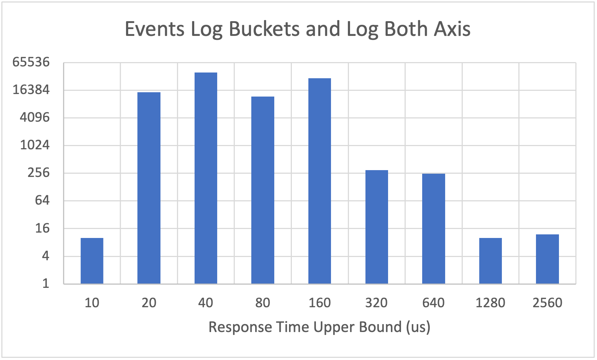

Introductions
Hi there and welcome to this course on Low Latency Java. During this course we will be covering the knowledge of how the JVM works, but also covering how to construct good performance experiments and analyze their results. In order to do that we will also cover computer hardware and the operating system itself in order to have a better understanding of the environment where our software is run. At the end of this course you will have a core set of tools that prepares you to work on a latency sensitive java project.
Why not just use C or C++?
This is one of the most common questions people ask when first encountering this topic. The simple answer is you should use the tool most appropriate for the job. If speed is the only name of the game, C/C++ is a superior choice. It even gives you the ability to inline assembly for truly crazy performance. The trade offs of C/C++ has a steeper learning curve, lacks a robust dependency management system, and has a higher risk of memory issues. All though can be addressed at least in part by hiring great C++ developers.
So, why do this stuff in Java? The first reason is risk. The barriers to crashing the VM are much higher than they are for causing a sigfault in a C process. It can be done, but java code that has the potential for doing so is often the focus of extra attention.
A second key reason is that Java may already be a huge part of the tech stack. The application may already exist in Java and we want to incrementally improve it and make it faster. Many of the components that our app connects to may also be Java, and the support stack of the company we work for strongly favors Java applications.
A third reason is talent pool, there are more qualified java software engineers than qualified C++ engineers.
Standards
Like most courses, we have outlined a set of standards we want students to be able to meet. Think of them as learning goals for what you should know and be able to do.
If you want, as you progress through this course, you can use this as a to track where you feel that you meet the standard and where you feel like you need improvement.
TODO write more about how to read standards
Theory
- Explain queue theory as it applies to real life and draw analogies to computer systems.
- Define key terms: Service time, response time, utilization, capacity TODO more terms if needed
- Define the types of tests and explain how they are related: Throughput tests, capacity tests, and response time tests
- Explain how queueing theory can result a system having a reasonable service time, but a terrible response time.
- Explain the differences between measuring these values for response time and service time: Average, throughput (operations per unit of time), percentile distribution.
- Identify if a plot is CDF or PDF, and weigh the pros and cons of each when it comes to analyzing performance data.
- Interpret a CDF and PDF percentile plot of a component's service time by identifying modes, tails, and other analogous behavior.
Hardware
- Define the key physical parts of the computer: CPU cores, Registers, L1/L2 cache, L3 cache, CPU sockets, RAM, Networking
- Explain the pipelining architecture of a modern CPU, and how super-scalar execution allows a single core to do many things at once.
- Describe the approximate timings to fetch data or instructions from registers, L1 cache, L3 cache, and RAM
- Describe how communication occurs between CPU sockets on a multi socket server and identify why that may be expensive.
- Describe the key performance counters kept by the hardware and OS.
- Understand the concept of out of order execution
- Describe the branch predictor's job, how it does that job, and why that optimization can cause performance issues.
- Identify which common operations take multiple CPU cycles to execute. i.e. Atomics, Division and modulus, etc.
- Describe how data's location in memory can impact performance
Operating System
- Understand and explain how the OS schedules execution on a CPU
- Explain what a context switch is to a lay person and why its suboptimal.
- Identify when isolating CPU core's is appropriate.
- Identify when pinning a particular thread to a CPU is appropriate and when its not.
- Define the difference between kernel space and user space.
- Describe different actions that happen in kernel space vs user space.
- Explain why kernel space is not a great place to have to go.
Java
- Describe how the JVM compiles class files and what those class files are
- Describe the job of the interpreter and how it does that job
- Describe how Just In Time compiler identifies code to be optimized
- Describe the different compiler levels, and how code can go back to interpreter mode.
- Identify pros and cons of JIT VS statically compiled and optimized code.
- Identify and explain the key ways that JIT can optimize code to perform faster: Inlining, Loop unrolling, Escape analysis.
- Explain why monomorphic and bimorphic dispatch make such a large impact on performance.
- Be able to generate, read and explain compilation logs
- Describe how java allocates memory for stack, heap, and off heap data structures.
- Identify what data is kept on the stack vs what's on the heap.
- Explain the concept of garbage collection and why is great for correctness but not ideal in low latency settings.
- Explain why that, in java, memory locality is rarely achievable with POJO's.
Micro benchmarking
- Describe why micro benchmarking is so hard. TODO this needs to be made more concrete.
- Describe why micro benchmarking should not substitute real tests, but they are still an important tool.
- Identify when JMH is an appropriate choice for testing the performance of some code and when its not
- Author valid unit level JMH benchmarks which utilize state objects correctly
- Design meaningful JMH benchmarks for a given context
- Collect, collate, and analyze JMH results to either characterize a units performance
- Attach appropriate built in profilers to a run and understand their tradeoffs: i.e. GC and OTHERS!
- Identify when its appropriate to use async profiler when benchmarking code.
- Attach async profiler to JMH tests properly to generate flame graphs of cycles and allocations
- Analyze frame graphs to identify optimization opportunities.
Deployed performance tests
- Identify what you are trying to measure with a test before running the test.
- Be able to utilize an appropriate framework for your desired experiment. Know when building a new one is required.
- Identify an appropriate profiler for you experiment. TODO we should look at ones outside async profiler that are readily available.
Key Terms
Response time is the amount of time it takes for a a client application to get a response for a particular input.
Service time is the amount of time our component actually spends working on a request.
Queue theory
The clients of our systems generally care about our response time, which is the time it takes, from their perspective, for their request to get a response. Be that a REST request or some message being sent and received via TCP.
But all our systems all have queues in them somewhere. At the most basic level, our networking stack has RX and TX buffers that queue both our system's input and outputs regardless of if we are using UDP multicast, REST endpoints, or some fancy async messaging bus like MQ or Kafka. No matter what, queues invade our system, and with good reason. They enable our systems to perform efficiently under normal circumstances and handle large bursts of activity with easy.
But there is a downside, those queues can build up and really hurt our systems response time. In general, our service time is the only thing we can change in our application, which is the time that we spend actually doing something.
Littles Law
Littles Law is defined as \( \lambda=\frac{L}{W} \) where \(L\) is is the number of people in the system, \(W\) is the average wait time and \(\lambda\) average service time. This holds for systems at saturation only.
Imagine you are in line at your coffee shop in the morning. There is 1 line, 3 baristas, the average coffee takes 1 min, and 15 people in front of you. How long does it take for you to get your coffee?
So \(\lambda= \frac{1 Minute}{3 Baristas} = 0.33\) and \(L=15\), so we can re-write Little's law as \(W=\lambda * L = 0.33 * 15 = 5 min\). So we have to wait in line for 5 min before we can place our order, this is called the queue time. We then can be serviced, which takes another 1 min for a total of 6 min. However, if we double the service time to make a coffee drink, we get a queue time\(\lambda= \frac{2 Minute}{3 Baristas} = 0.66\) and \(W=\lambda * L = 0.66 * 15 = 10 min\) and a total response time of 11 min.
This relationship between service time, line length, and wait time is intuitive. Yet we seldom consciously apply it to computer systems because the queue is hidden, or we instinctively scale our system out whenever response time spikes or load is high.
A Little Faster
Little's law lets us easily understand and estimate our wait time in a system with a single queue and multiple workers. This is basically our standard web server! A web server has many threads (baristas) working to service requests (customers) in the order they came in as quickly as they can.
Most of us speed up our application by scaling them up by vertical scaling by hiring more baristas and out by horizontal scaling and building more stores. And this is a valid strategy, but what if instead we focused on reducing the time it takes to make a coffee drink?
Lets first consider adding a barista to our equation. If we have \(\lambda= \frac{1 Minute}{4 Baristas} = 0.25\) that gives us a \((1-\frac{0.25}{0.33}) = 25 \% \) speed up. Thats great, and it drops our wait time down from 5 min to (W=\lambda * L = 0.25 * 15 = 3.75 min\). But what if instead, we just made it faster and easier to make a coffee. How much faster would we need the coffee making process to be? Well, lets solve for t: \(\lambda= 0.25 = \frac{t}{3 Baristas}\), we get \(c= 3 * 0.25 = 0.75 Minutes\). So, if we can save an average of 15 seconds in the coffee making process per coffee, we can realize the same benefit as adding a barista!
The Leaky Bucket
So we have talked about the working side of the queue, but we haven't talked much about our clients behavior. Little's law formally defines \(L\) as the long term average number of people queued in the system. But this is rarely what we are concerned with, we care most about response times when we get spikes in activity.
Lets imagine a simple bucket with a hole drilled in the bottom. Water in the bucket represents queue of customer requests and we will use this as \(L\) gallons. The water coming out of the bucket is the requests that we successfully respond to and, for the sake of this, we will assume is the constant \(\lambda\) in gpm. And lastly, the flow rate into the system is \(I\) in gpm. The size of the hole in the bottom is inversely proportional to our response time. Lets say for this example our flow rate is \(\lambda = 1\) gpm
TODO Empty bucket with a hole image
We start our application up and our bucket is empty. When our bucket is empty, \(L=0 g\), water flows right through and our queue time is \(W=0\). So long as the flow rate into the bucket never goes above the flow rate out of the bucket, \(I<\lambda\) queue time remains unchanged.
TODO Bucket with water flowing in and out
But as soon as the flow into our system even slightly goes above our flow out of the system where \(I>\lambda\), our queue builds up at a rate of \(I-\lambda\). Lets say, for 10 min, \(I=1.3\) gpm, then our queue depth would be \(L= (1.3-1)gpm * 10 min = 3 l\)
TODO Bucket filling with water
This is bad because, the water coming into the system now has a queue time of 3 min given Little's law \(W=\frac{L}{\lambda} = \frac{3 l}{1 gpm} = 3\). In order to solve for what value of \(\lambda\) we need to have to recover, we first have to decide on a recovery time \(R\) which is the time it takes to clear the queue.
Lets say you want to recover in 5 min from an event like this. We define the drain rate as \(\lambda-I\), which is just the inverse of the fill rate from before. So we need to find \(I\) such that \(R * (\lambda-I) = W \).
\(5 min * (1 gpm - I) = 3 G \\ 1 gpm - I = \frac{3}{5} gpm = 0.6 GPM \\ -I = 0.6 - 1 GPM = -0.4 GPM \\ I=0.4 GPM \)
After all that, we find that if we want to recover within 5 min, our average input needs be less than half what our processing capacity is.
This concept is one of the most often casually ignored ideas behind queue theory. It often manifests itself when asking a question like "What will the recover time be if things get all queued up?". The simple answer is that we can can't know unless we put constraints on our clients (which is rarely possible). If our system normally is at or very near capacity all the time, there is no opportunity to make up for momentary lapses in performance.
Little problems
But wait! Little's law represents a very simple system that does not represent most real world systems. Even in this simple example, we can imagine some individuals ordering very complicated beverages that take much longer to prepare than others. It also doesn't take into account fluctuations in arrival rate. Imagine the Starbucks in Union Station just as a huge train of semi-awake commuters unloads, stumbling over their extremely complex orders.
Under these situations, Little's law breaks down. And sadly, there isn't a great math equation to handle these cases. We have two options to handle this. The first is to build a robust, probabilistic model of our coffee shop and then run a Monte Carlo simulation. We will cover this more in our modeling chapter.
The second option is to run carefully constructed experiment on a real system. In our metaphor, that means having a bunch of people with known orders show up at at known relative times. We will cover this in 2 different contexts, first in our JMH chapter and then again when we look at our application as a whole in our Component chapter.
Final thoughts
Little's law is a critical first step in understanding the behavior of computer systems and the relationship between service time, response time, and request volume. While is difficult to say exactly how real world systems behave with a simple math equation, we can use this law to run theoretical experiments quickly. We will use these concepts later to implement models of our system to see how making an improvement on one part of a component impacts the response time of the whole system.
A review of statistics
One of the most common statistics thrown around the table in most capacity planning meeting is Transactions Per Second or TPS. It is implied that TPS is an average throughput of the system at capacity. There is one problem with that: Little's law says that being at capacity is a dangerous place to be for response time. Most of these tests intentionally fill up the work queue of their victim application and track response time as an afterthought.
So lets look how we can use statistics to measure data in a way that puts latency first.
Standard summary statistics
The standard set of summary statistics is defined as the number of data, the minimum, maximum, mean or average, and the Standard Deviation. For 2D graphs we can also calculate the linear regression line, as well as the std error on that regression.
We are often trained to believe that this is adequate to describe most things, but it actually rarely is. A perfect counter example is Anscombe's quartet as seen below, All the 4 graphs have the same set of summary stats.

When we look at these 4 sets of data, we can see very different patterns, but, again, all have the same average, standard deviation, linear regression, regression error, and more. While this example is extreme, it does underscore the danger of relying on just summary stats. We really need a better way to view our data.
A better approach with histograms
Humans are very visual creatures, and graphs are an amazing tool for visualizing a huge amount of data very quickly. I have seen visualizations whipped up in a few min on R, the open source statistical analysis tool chain, that compress unwieldy data into meaningful visualizations. Numpy can do similar magic. While using both those tools are beyond the scope of this course, I do want us to be familiar with a few key ideas and tools when it comes to analyzing our response time.
Most of these visualizations rely on having a timing for every event or a sample of events to be recorded individually. While exporting this raw data from within the application covering internal service times and queue is ideal, the cost of doing so is often quite high. Packet Capture at both the OS and networking level can help shift the impact out of your application, but the trade off is granularity.
So, lets assume we have 2 values for each message our app gets: the arrival time \(a\) into the system, and the response time \(r\) was fully sent. Using this data, we can compute a service time for each event simply by \(r-a=s\).
Now that we have S, lets make a histogram of that data.

Here is the first problem we run into with visualizing performance data, high tails. So lets re-adjust our buckets to be logarithmic.

Now thats better. But we still barely see our tails. This often happens with perf data, and it may be helpful to log scale our X axis as well. Be careful to ensure that all values are non-0 before doing this.

Sometimes, log scaling the y axis may distort our view of the data, so I recommend carefully inspecting both when looking at data to make sure you aren't lead astray

The last visualization we want to talk about is a Cumulative distribution plot. This is often what is used when visualizing performance data as well, and the function is used in our modeling simulations as well. A view like this is often seen in performance reports for various applications.
The way to view the CDF is that for any value on the X axis, the value of the Y is the probability of a randomly selected value being at or below that X value. By adjusting the bucket granularity and the scaling of the axis we can easily have a CDF show the performance curve for both typical cases as well as at our tails.
A note about these graphs: They are made in excel using made up data. I highly recommend using numpy or R to produce these graphics. Both are able to produce professional looking graphs quite easily, and ones with much better granularity than I was able to make up for data series.
Percentiles
Percentiles are also a great tool for quickly analyzing the tail of our response time graph. The percentile \(p\) of series \(a\) is defined as the first number for which \(p\)% of the numbers in \(a\) are less than or equal to. Most of us are familiar with the Median, which is the 50%'ile.
When looking at the tail, we typically like to look at these percentiles: 90, 95, 98, 99, 99.9. Depending on the volume of the data in the data set, we may also look at the 99.99. We rarely judge an applications performance by its maximum, or the 100%'ile.
So, what do these numbers tell us? Well, the 99%'ile tells us that 99% of messages were processed faster than that value, while 1% where processed slower. When looking at service time, having a spike is to be expected where the 99.99%'ile is much higher than the 50%'ile. We will spend a lot of this class covering why that happens and what to do about it.
Response time over time
Our systems often have transient load and variable interactions by customers. Displaying a time series of our response time distribution can be key in identifying not only surprises in our customers activity, but also our systems.
Let me tell you a story. At a company I worked for, one of our latency critical systems had a very weird behavior. We had super detailed response time data over the course of the day, and we notices that there were 2 "modes" of latency, not explained by queueing when looking at the CDF. We were stumped for days.
TODO graph
Then someone had the bright idea of plotting that data over time and we immediately noticed the weird behavior. Our app was going to some sort of evil mode for a period of many seconds at a time, and then coming out of that mode. In evil mode our service time increased significantly.
TODO graph
That time series view ultimately helped us to isolate the problem. 2 takeaways from this one:
- Capture the finest data you can. You can try capturing every event or a sample of events and export telemetry data on those events to another system for analysis. Or, you can use time boxed histograms to log every few seconds and your favorite logging tool can pease it together for you.
- Don't be afraid to try looking at your data in a different way. CDF vs PDF, individual events vs a histogram, large time windowing vs small.
HDR Histogram
High Dynamic Range Histogram is a wonderful java tool that allows us to track values in a dynamically sized histogram. The buckets are sized to preserve a fixed number of digits of precision, which is great for performance measurements. The larger the values, the larger the bucket. The library outputs this data typically as a table of percentiles, but the data can also be serialized out of the system. It even provides lock free abstractions to record values from many threads and periodically dump the results.

The above example was plotted using data produced from HDR histogram and a tool called HistogramLogAnalyzer. It shows the applications tails, and, unfortunately, conflates latency for response time.
Distribution analysis
Here are some sketches of some common patters we sometimes sometimes see. First is a typical latency distribution that we see. Here we see a single modal distribution with a relatively tight majority of messages. After that there are a few events that have a much higher. These higher percentiles typically reflect both garbage collections and system jitter, although for some workloads they may reflect extremely heavy.

Next we have a bimodal distribution showing that we have 2 distinct modes of operations. This could reflect the applications workload itself, but could also reflect a variety of strange behavior on the operating system or hardware.
Time series data
TODO add some basic time series data.
Computer Architecture: High Level
For this high level diagram, we will be focusing on both single socket and dual socket servers. A Socket is a spot where a single CPU chip can fit into the motherboard. So a single socket motherboard has room for 1 CPU chip and a dual socket motherboard has room for 2 CPU chips. All enterprise CPU's natively support such configurations.

Single socket design
So lets start off with a physical image of a single socket motherboard before we talk about the inner workings of it.
 )
)
We can physically see 5 main components:
- In the red box, we can see the CPU socket.
- In the blue box we can see the RAM slots
- In the green box we can see the motherboard chipset
- In Magenta we can see one of the boards PCIe 3.0 ports.
- On the left edge of the motherboard we can see the IO panel with all our USB and built in networking ports.
But lets break this down a little more to see how the various components in the computer are actually connected.
graph LR; CPU-->MemoryController MemoryController-->RAM; CPU-->MbChipset; CPU-->PCIe3.0; MbChipset-->PCIe2.0; MbChipset-->OnboardNetworking; MbChipset-->USB; MbChipset-->SATA/IDE/SAS; MbChipset-->PCI;
The CPU
The CPU has a lot more detail that we can see here, but its at the heart of the computer. Its where all our code runs, and it also has to handle the hardware and other software thats running on the machine. Things like communicating with your graphics card, connecting a TCP connection, and writing data to disk.
Memory controller
Almost all recent CPU architectures embed the Memory Controller into the same chip as the rest of the CPU. This was to minimize the amount of time it took to access ram. So this means that the CPU's chip is almost directly connected to the ram on the motherboard. Commands to the ram need to fit thru a bus which issues commands to the ram (Writing or requesting data) and receive data back on the data bus.
RAM
Random Access Memory is where our application is typically loaded too. RAM is much slower than the CPU and can easily become the bottleneck in many systems if its not managed well.
PCIe 3.0
PCIe 3.0 is a direct connection between the CPU and an expansion card. Expansion cards are used to specialize a machine more easily. Some example cards are specialty network adapters, graphics cards, FPGA's, storage controllers, and crazy fast SSD storage. Cards have a minimum supported PCIe version, but PCIe is backwards compatible, so a PCIe 2.0 card can be plugged into a PCIe 3.0 port.
The key advantage of PCIe 3.0+ over previous generations of PCIe and PCI is that PCIe 3.0 has that direct connection to the CPU. This reduces the cost of interacting with the cards, and can result in lower latencies and greater throughput.
Motherboard Chipset
The motherboard isn't just a huge PCB. It has its own bit of silicon called a Chipset. Older computers had 2 distinct chips, a northbridge for PCIe and memory access and a southbridge for everything else. Today, most computers have a single chip for the motherboards functionality.
The chipset is responsible for a lot of stuff as we can see in the diagram. Basically everything that the CPU doesn't directly handle itself: USB ports, SATA/IDE/SAS ports, PCI, PCIe 2.x, interacting with the motherboards BIOS, and interacting with the physical sensors on the motherboard like voltage meters, LED's, and temperature probes.
The chip set does not DO anything with this data by itself (after the machine is up and running), it simply provides an interface for the CPU to issue commands to and read data from.
Dual socket design
At the highest level of abstraction, a dual socket and a single socket machine are the same. They allow an application to access all the resources shared between the CPU's.
But as we dig a little deeperThere are some key things to understand about dual socket MB's that most people take for granted that can impact an application's performance in subtle but significant ways.
The first thing I notice about this pictures is that both the CPU sockets have their own hunks of ram next to each other. And thats for a reason: Each CPU chip has its own dedicated RAM and PCIe 3.0 ports. Typicaly the ram around a socket is alligned to that socket. For the PCIe 3.0 port mappings, the motherboards manual should have all the details.
So, why does that matter? Lets look a level deeper.
graph RL; CPU0---RAM0; CPU0---PCIe0_3.0; CPU1---|QPI|CPU0; RAM1---CPU1; PCIe1_3.0---CPU1; MbChipset---CPU0; CPU1---MbChipset;
Non Uniform Memory Access
As the above diagram makes clear, our 2 socket machine is really like 2 machines with a special interconnect. So what does that mean? While NUMA specificaly calls our memory, its now includes PCIe3 slots as well!.
At the heart of it NUMA means that a CPU can access its RAM and PCIe3 cards faster than another CPU's RAM and PCIe3 cards. It's not just faster but more efficient as well. Lets understand why.
Lets say CPU0 in the above diagram wants to access something in its own ram. It contact's its own memory controller (on die), and issues a command to the ram to fetch a particular address. The ram is directly connected to the memory controller so its able to respond quite quickly with the requested data. Lets say all this takes 400 nanoseconds.
Now lets compare that to CPU0 trying to access RAM1. It's memory controler is no help since it doesn't have access to RAM1. Instead the CPU needs to build a message and send it over an interconnect between CPU0 and CPU1. Intel branded their version of this interconnect as QPI and later UPI. This interconnect does a lot, its not just there for RAM access. Its responsible for coordinating between CPU's for anything that is being concurrently modified in chance, communication with PCIe3 cards belonging to another CPU, etc. So its very busy. We might even have to queue our request behind other requests. Either way this takes time.
That request gets sent to CPU1 where it needs to be handled by a CPU core and serviced memory controller to access RAM1, and return the result back over QPI to CPU0 in a new message (which may be queued). Then CPU0 needs to receive that data and put it into its cache. This makes a cross socket memory access strictly more expensive than a local memory access in all but the most memory bandwidth constrained situations.
Similar communication needs to occur for commands to and data from a PCIe 3.0 card. While the CPU is quite fast at executing this communication, and the bus has a massive amount of throughput, this is still extra work and extra time.
Computer Architecture: CPU Design
Computer Architecture: Cache, RAM, and Locality
Data locality is defined as having related data close together in ram. As we will see, having data locality can have huge performance implications.
RAM
Random Access Memory is slow but large. When compared the caches, accessing main memory takes orders of magnitude longer. Often measured in 100's of nanos. Modern systems rely on cacne efficiency in order to keep the CPU fed with instructions and data.
CPU Cache
The CPU cache is higher fast memory for storing data and instructions very close to the CPU.1 The CPU has hardware for checking the cache before going to RAM when it needs new instructions or data.
Most modern processors have 3 levels of cache, conveniently named L1, L2, and L3. Each increase in level increases the size and the capacity typically. Some CPU designs even split L1 into 2 seperate caches, one for data and another for instructions.
Recent Intel architectures like Kaby Lake have 32 kb of L1 data cache, 32kb of L1 data cache, and 256kb of L2 cache per physical core. L3 cache is typically shared at the CPU level and varies significantly depending on which CPU you are purchasing but it typically ranges from 12 to 40MB.
Cache Line
Data is transferred from ram to the cache based on cache lines. Most processors have a cache line size of 64 bytes. This means that the memory controller always asks for 64 continuous bytes. So even ify ou are just using 1 int on that line, you still have to load the whole thing and that eats up your cache.
But more than that, cache lines are aligned with physical memory. This tends to only make a difference when a primitive type straddles the cache line boundary. This can make a measurable difference when parsing certain types binary messages like SBE and FixBinary.
Cache consistence and writing
When we have the same data in multiple locations, we introduce an issue when it comes to writing data back to those caches. CPU's have to not only know when to write back the data to RAM, but also share that new sate between CPU cores, if strongly consistent operations are being performed like atomic modifications. That can get expensive as all instancees of that cache line need to checked and locked before the modification can take place.
Speculation
Modern processors speculate when it comes to their cache content. What that means is that the CPU has dedicated hardware, typically shared between the core and the memory controller to pre-fetch data that the CPU thinks it may need in the future from ram. So that way by the time you need it, its already there.
Speculation works best if your memory access is predictable and not based on pointers. This means for java, that the only way to take full advantage of speculation is to be accessing primitive arrays.
Translation Lookaside Buffer
Modern processors are designed to work with virtual memory efficiently, and they contain a TLB inside of the memory management unit. It is a cache which stores recent translations of virtual memory address to physical memory addresses.2 Virtual addresses have a predefined set of bits which represent a page number(A page is a block of virtual memory), and the rest represent an offset into that page. Modern processors have multiple TLB cahces, typically 1 per core split into multiple segments based on page size.
Nehalem processors for example have 4 L1 TLB's.3 2 Data TLB's with 64 entries for 4 kb pages and 32 entries for 2/4 mb pages and 2 instruction TLB's with 128 entries for 4kb pages and 14 fo 2/4 mb pages. Finally they have an L2 unified 512 entry TLB for 4kb pages. Various different intel and AMD architectures have adjusted these various sizes between generations as they attempt ot find the right tradeoff between TLB misses for generic workloads and transistor counts.
Modern processors also do hardware page walks to find the right page of memory if there was a TLB miss. Ultimately, since the page table is in RAM, it may also be cached, so the CPU checks caches first before accessing ram.
graph TD;
start[Need to load data from ram] --> checkTbl[CPU checks TLB];
checkTbl --> tblHas{Does page exist in ram};
tblHas -->|Yes| physical[CPU Generates physical Address];
tblHas -->|No| accessTable[Access Page Table<br>in cache or RAM];
accessTable --> inRam{Page is in main memory};
inRam-->|Yes| updateTlb[Update TLB];
updateTlb-->physical;
%% Source: https://en.wikipedia.org/wiki/Translation_lookaside_buffer
The above assumes that the OS has not page swapped anything in ram to disk, if that were to happen, the OS gets a page fault and must load the memory segment from the disk.
So, why do we care about this? Lets first remember to context of our TLB it is required every time we try to access anything in memory, even if that item is already in cache! The cache keeps things based on physical addresses. So, this can cause our normal code to have to take a break and go to main memory (in the worst case) in order to access or modify a value we already have in cache.
Now lets imagine we have a full cache miss and a full TLB miss? Now we have to do 2 full RAM reads, one to access the page table to figure out which ram we need to read, and a second to actually get the data.
But we have some good news: CPU designers know about this limitation and have invested heavily in mitigating it. Using speculation, the CPU can try to keep the TLP populated with the relevant entires which can reduce the risk of having a TLB miss. It's also smart enough to use the other caches like L3 cache to store parts of the page table on the CPU to reduce the cost of a miss.
TLB Thrashing
At the same time, having a misconfigured application, or an application that is very inefficient with its ram usage can suffer from TLB thrashing. Thrashing is defined as overuse of virtual memory resources causing very high rates of TLB misses. This happens when the set of active pages in use by a CPU excedes the ability of the TLB to store all those pages. Here, active pages specifically means pages which are used very frequently.
An example of a data structure which might cause serious TLB Thrashing, on a system configured for G1 garbage collection:
public class Example{
Object[] a = new Object[32];
}
LinkedList<Example> aLongLinkedList = getListOfExamples();
for(Example e: aLongLinkedList){
for(Object o: e.a){
o.hashCode();
}
}
So why is this so bad? Well, in java, there is no such thing as locality for java objects. This means that each node in our linked list may be in 1 page, which points to our example object on another page, which has an array pointer which may point to another page. That array can then point to 32 objects each on another page. So to visit just 1 Example object above, we could hit as many as 35 different pages, and as few as just 1. It depends on both how the OS allocated the JVM's ram, and how the JVM has compacted these objects.
Its critical that the TLB miss can rely on L1, L2 and L3 cache to satisfy missing when thrashing is happening to minimize its cost per instance.
OS Refresher
Most standard definitions of the Operating system put it between the hardware and our applications. It sits as an abstraction and handles setting up and maintaining an environment suitable for running our applications But in reality, the line between app, OS, and hardware is a little blurry.
In general, I am going to refer to standard behavior here in the linux kernel, specifically Red Hat Enterprise Linux. I will be focusing on this general purpose OS rather than a specialty OS simply because its one of the most common OS's.
Scheduler
One of the key responsibilities of the OS it to ensure that all our applications play together nicely. Our systems have finite memory, storage, and networking bandwidth. But the most contented most frequently is compute capacity. The scheduler is responsible for managing the compute resources (CPU cores) and making sure they all have something to do. At the same time its responsible for ensuring that no process monopolizes the CPU to the detriment of other processes.
The schedule maintains a work queue of threads which are ready to do something, and provides them typically with a window of time to do their stuff. If the process is running at the end of its alloted time, the OS preempt the process by performing a context switch, stopping that thread and putting it at the back of the queue.
We go into more detail about the schedule in the chapter titled Working with the scheduler
Context switch's
A context switch takes a running thread and saves its state to ram so it can be paused and resumed later. This happens in kernel mode for most unix variants, which first requires the CPU to shift modes. Both of these operations combine to take a few microseconds.
This is especially pertinent for interrupts, as all interrupt handling requires a context switch.
Dynamic Allocation and Virtual Memory
The OS is responsible for managing the computer's RAM, and providing it to various processes when they ask for it via allocation. Most allocators in modern OS's are dynamic allocators on virtual memory. Dynamic allocators break the physical into blocks and those blocks are provided to the application as allocations occur. Virtual memory means that the application does not know the true hardware address of the ram that its accessing, instead there is a level of indirection the OS maintains to provide a unique virtual memory space for each process.
Fragmentation is the enemy here, where our memory in use gets diluted with large chunks of unused space. If any bit of a dynamic block has yet to be freed by a process, the OS can't do anything with it. C/C++ can not trivially compact their footprint, so its possible for an otherwise correct C application to run out of memory due to fragmentation.
Here are some emergent properties of dynamic virtual memory:
- Dynamic blocks that are unused can be returned to the pool and provided to other processes. Smaller blocks can lead to better efficiency
- Buddy blocks, a type of dynamic allocator which has many pools of blocks based on size, can reduce the risk fragmentation
- The OS can swap out blocks to disk backed storage, often called paging or swapping.
- Each application has its own virtual memory space.
Kernel mode
The OS creates a clear line between user mode and kernel mode. Kernel mode is used by the OS and most device drivers in order to work with the hardware. Kernel mode has elevated privileges down to the hardware level, which is why there are so few things that run in kernel mode. User mode is where our applications run.
Memory is strictly broken down into kernel space which is protected from modification by user applications and user space, where our application runs. Some operations, like turning off the computer, must come form kernel space. With that said, OS's provide API's for applications to call into kernel space to perform various actions.
Kernel mode tasks are also responsible for file IO, network IO, scheduling, memory management, etc. There are many API methods called system calls which call into kernel mode code.
Kernel mode is not free. In order to call a kernel mode method, the CPU core needs to perform a full context switch into the OS with kernel mode enabled, perform the task, and then context switch back. This is an expensive process, and is one of the reasons why we try to limit system calls in the critical path.
Interrupts
An interrupt is just a signal from the hardware that the software needs to do something, and the OS is the software that is the first thing to respond to those interrupts. Interrupts are handled in kernel mode.
One of the things about interrupts thats key to understand is that they preempt the application code running on a core when they are received. This causes a context switch and a latency spike as the application is either migrated to another core, or, if the process is pinned, the OS might just have to wait for the interrupt to complete. The good news is that most interrupts are extremely short, and we can tell the OS to prefer handling interrupts on certain cores.
Networking and most forms of IO (Disk, keyboard) are interrupt driven as those devices communicate back to the application code.
NUMA and Numa Control
As we touched on in our first hardware chapter, multi socket machines have distinct barriers between the CPU's, each having their own RAM and PCIe3+ slots. All communication between CPU's has to go thru a special bus, but luckily the OS gives us a tool to avoid that all together and its call numactl or "numa control". It lets us tell the OS where to run a process's threads and where it should allocate its RAM usage.
NUMA Control
Luckily, linux operating systems give us an ability to put a fence around our processes to force their thread and or memory allocations to be on a particular socket. This utility is called numactl. Its very easy to use, all you need to do is prefix your normal startup script/command with numactl <arguments for numa ctl> <your application start>. The restrictions that numactl places on a process are inherited by all of is children as well.
By default, numa controls are not enabled for a process so the OS will non-deterministically allocate to RAM and schedule your processes thread's.
Working with the scheduler
The most important part of working with the scheduler is knowing how to tell the OS to avoid preempting your latency sensitive process. While there are more exhaustive tuning guides than this, we will touch on the key tools that are used to make that happen.
Isolated CPU's
The first think we can do is tell the OS what CPU's it should isolate, or avoid using for cores by scheduling. We do that with the isolcpus kernel flag. This does require a change to the boot configuration and a box restart. Isolated cpu's will only run threads specifically assigned to that core by the thread using the affinity syscall. For those on the JVM, there is an open source library called Java Thread Affinity by the open HFT project.
So, what does this do? It tells the kernel's load balancing based scheduler to ignore those cores and not consider them candidates for execution, outside of those threads specifically pinned to those cores. This removes the risk of some random task on the computer causing our app to be preempted off of a core and moved around. This can significantly reduce latency, and helps protect the process from things like humans SSH'ing onto the box to investigate logs, or a security agent running a scan. Such users can still do what they need, but they are limited to the non-isolated CPU's to do it.
As a general best practice, it is best to leave at least 1 physical core unisolated per socket. This gives the OS and hardware interrupts somewhere to execute. Remember, hardware interrupts must be handled on the socket that receives them.
Avoid syscalls
Every system call is an opportunity for the OS to take control away from your application thread, but especially calls like sleep and lock/mutex related syscalls.